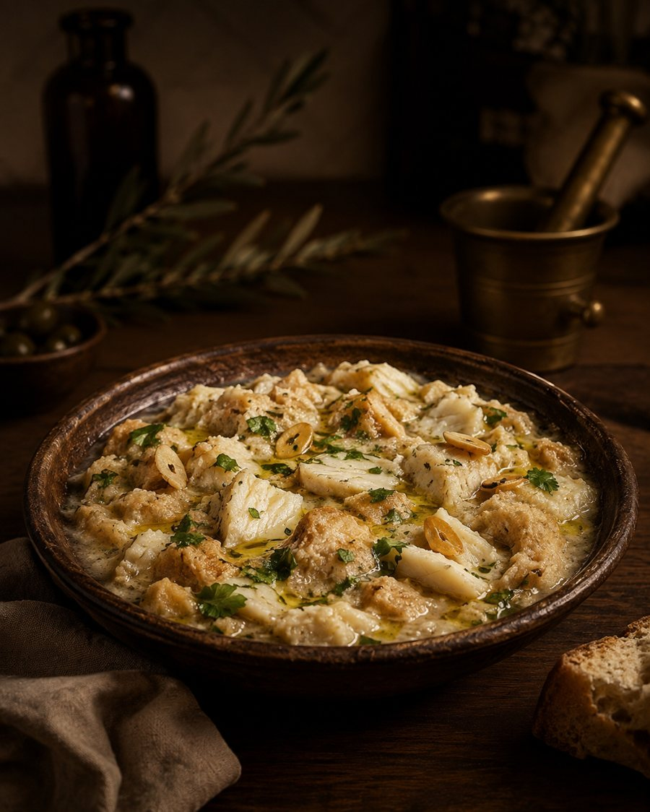

Açorda de Bacalhau
Pão amanhecido, bacalhau desfiado, coentros e um fio generoso de Zirbo no final.
- Demolhe o bacalhau e desfie em lascas.
- Ferva água com alho e coentros; regue fatias de pão amanhecido.
- Junte o bacalhau e um ovo escalfado por cima.
- Termine com um fio generoso de azeite antes de servir.